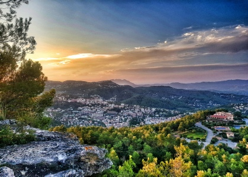
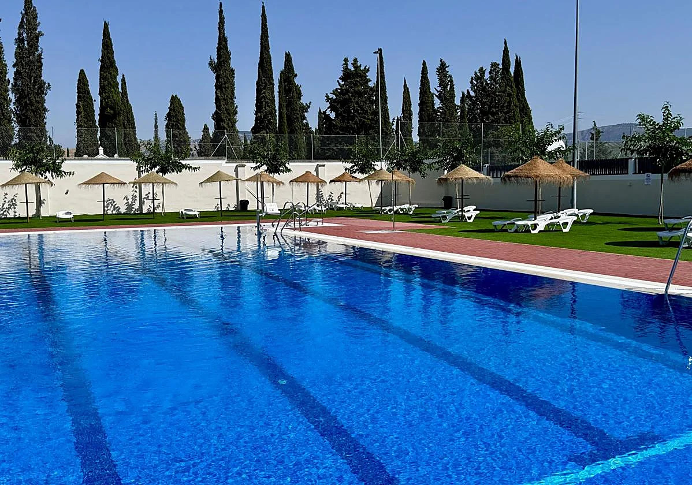
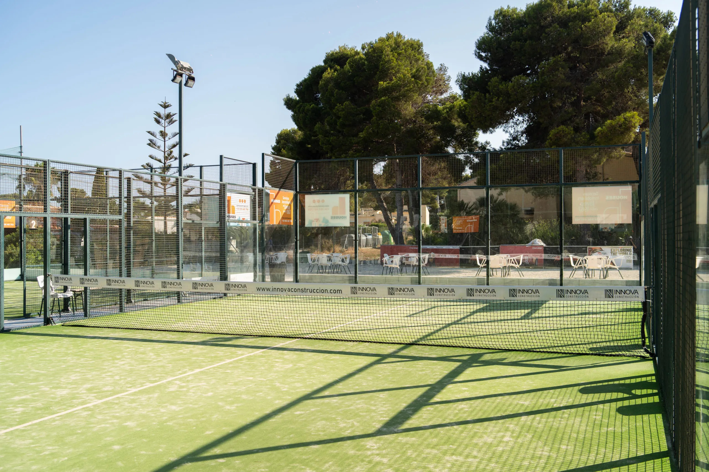
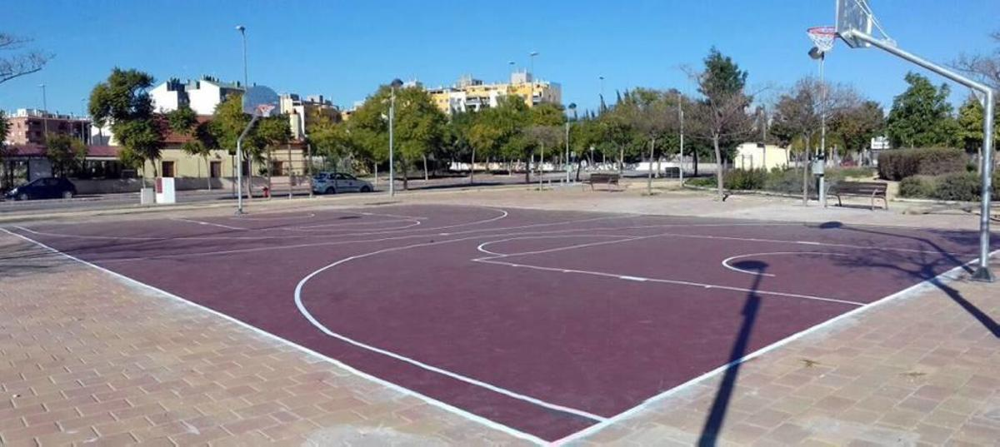

Entorno
Paisaje de club y masa vegetal como contexto dominante.
Documento de referencia visual y de interfaz generado a partir del frontend actual del sitio web.
La web proyecta un club familiar, próximo y muy ligado al entorno natural. El lenguaje visual evita el tono corporativo duro y se apoya en texturas suaves, verdes de pinar y titulares clásicos.

Paisaje de club y masa vegetal como contexto dominante.

Espacios de uso común, ocio y convivencia al aire libre.

La práctica deportiva aparece integrada en un marco relajado.
src/index.css
La paleta trabaja una familia de verdes bosque como identidad principal, con crema y arena como bases de interfaz y un dorado puntual para CTA.
Georgia / Times New Roman serif
Se usa para h1, h2 y h3. Da
un tono institucional, amable y ligeramente editorial.
Segoe UI / system-ui sans-serif
--radius: 16px
0 6px 24px rgba(20, 51, 31, 0.12)
max-width: 1080px
64px desktop, 44px mobile
Header sticky de 66px con blur y borde inferior.
Píldoras de gran radio, peso 700 y elevación al hover.
Fondo con doble capa, texto centrado y CTA clara en dorado.
Uso de icono, título breve y texto descriptivo.
Contenedor blanco, borde fino y sombra orgánica.
Tarjeta seleccionada en módulo de reservas.

Este documento se ha preparado a partir del frontend actual del proyecto.
Archivos de referencia: src/index.css, src/components/Home.jsx, src/components/InfoSocis.jsx, src/components/Reservations.jsx.